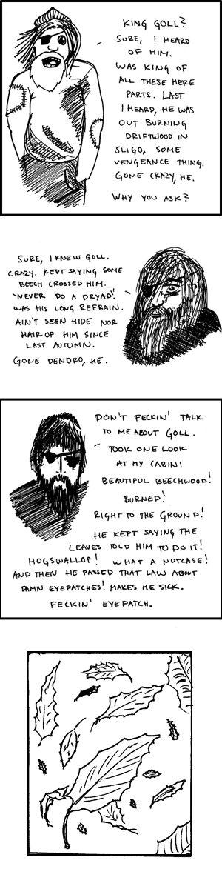

. . .
. . .
 . . . 035 . . .
. . . 035 . . .
 . . .
. . .

On the Madness of King Goll
6.6.2008
-----
They will not stop, the leaves a'flutter around me, the beech leaves old. - W.B. Yeats, in 'The Madness of King Goll'
...I really like this comic. I doubt others will, since only really obscure english students would get it on the first reading, most likely. King Goll, some old Irish king, was a one-eye himself (the poem, for some reason, never states this, and I had to find it in an annotation). This is also the first comic where I mastered borders in photoshop. Worked on the art a bit, too. The alt-text is a reference to the old saying: "In the land of the blind, the one-eyed man is king"...
© 2008 Richard L.